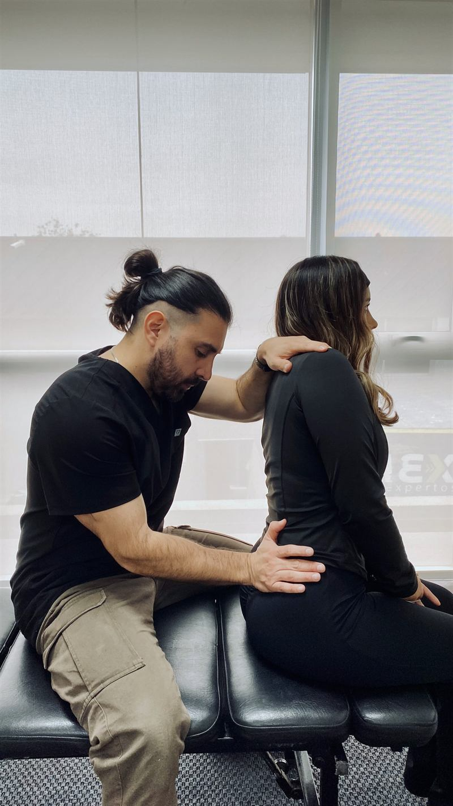
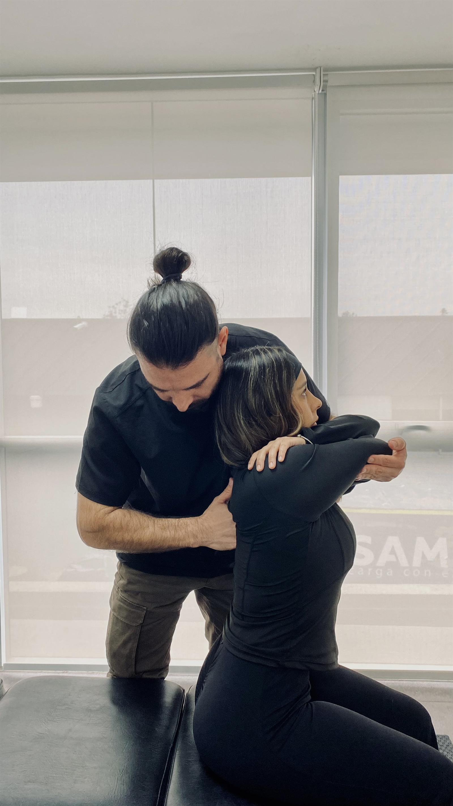
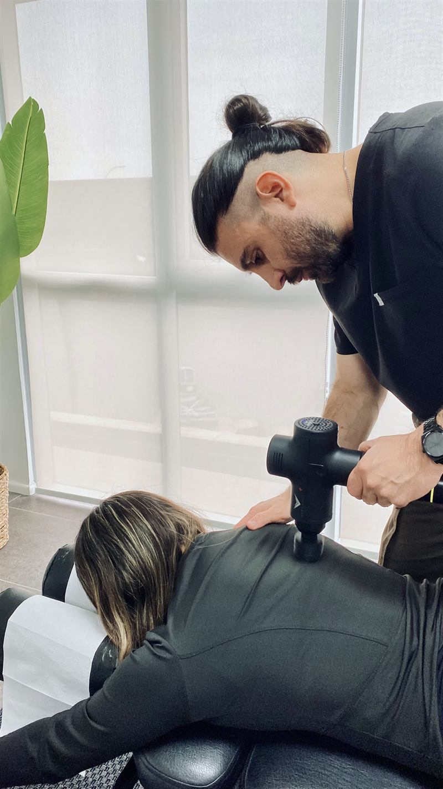
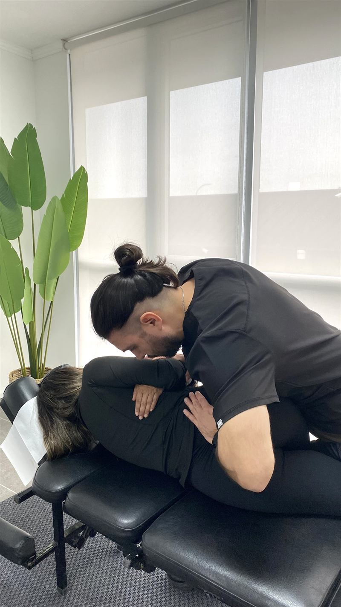
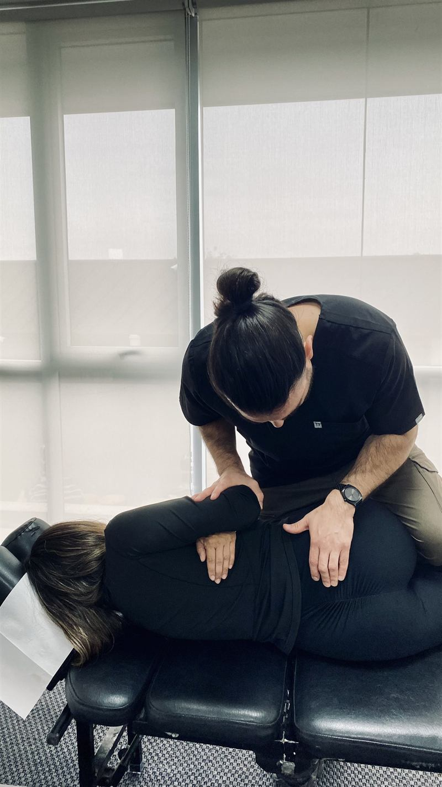
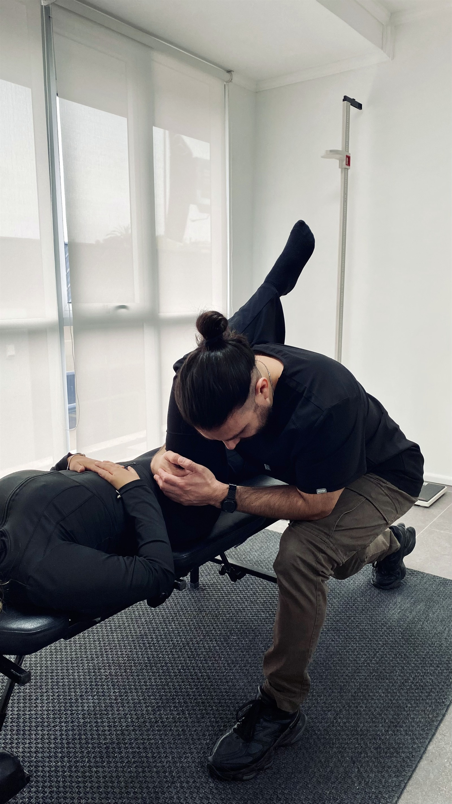

QUIROPRÁCTICO UCEN · KINESIÓLOGO UCN
Soy Ricardo, Quiropráctico y Kinesiólogo, dedicado a ayudar a las personas a recuperar su movilidad, disminuir el dolor y mejorar su calidad de vida mediante ajustes quiroprácticos y tratamientos personalizados.
Mi enfoque está orientado a identificar la causa del problema y no solo aliviar los síntomas, entregando una atención cercana, profesional y basada en la evidencia.
Un enfoque profesional y seguro para reducir el dolor, recuperar movilidad y mejorar tu calidad de vida.
Ayuda a disminuir molestias en espalda, cuello y articulaciones mediante ajustes quiroprácticos específicos.
Favorece una mejor función corporal y una movilidad más cómoda en tus actividades diarias.
Trabaja sobre el sistema musculoesquelético y nervioso para apoyar un estado óptimo de salud.
Cada plan se adapta a tu evaluación, tus objetivos y tus necesidades, priorizando seguridad y confianza.
Una atención cercana y profesional, orientada a comprender la causa de tus molestias.






La confianza de nuestros pacientes es nuestra mayor satisfacción.
Excelente profesional, muy recomendable
Ricardo me atiende hace un año con excelentes resultados para mi calidad de vida, altamente recomendable
Excelente profesional explica todo muy agradable su atención
En relación a la sesión Llege con mucho dolor y al otro día bajó notablemente Recomendadisimo 🙌🏻
Agenda tu cita y encuentra la consulta en La Serena.
Atención solo con cita previa